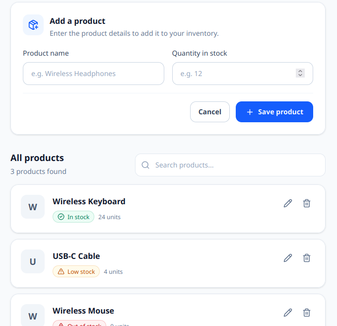

These projects demonstrate concepts I have practiced while learning
programming and software development.
Simple Calculator
A Python command-line calculator that performs basic arithmetic
operations including addition, subtraction, multiplication, and division
with error handling for division by zero.
Watch the demo
How I built it
Wrote down the four operations the program must support.
Read two numbers and an operator from the user.
Used if/elif to pick the operation.
Handled division by zero with an error message.
Technologies Used
Python
Command Line Interface
VS Code
Library Management System
A Java console application built using object-oriented programming. It
contains separate Book, Member and Library classes. Books can be added,
borrowed and returned, and members can display their borrowed books.
How I built it
Created separate Book, Member and Library classes.
Used private fields and public methods to apply encapsulation.
Used ArrayList to store books and a member's borrowed books.
Implemented borrowing and returning behavior.
Tested the classes from the Main class.
Technologies Used
Java
Object-Oriented Programming
ArrayList
VS Code
TaskFlow — Backend API
A backend task and project management API developed as a practical
software engineering project. The domain includes organizations,
projects, membership roles and tasks.
How I built it
Organized the application into feature-based modules.
Designed routes, controllers, services and repositories.
Used service logic to enforce application rules.
Used Prisma to interact with PostgreSQL.
Worked on authentication, authorization and project membership
flows.
Technologies Used
TypeScript
Node.js and Express
Prisma
PostgreSQL
Product Management Interface

A React interface for managing product information through forms and a
product list. The interface includes adding, editing, searching and
deleting product records.
How I built it
Separated the interface into reusable React components.
Used state to manage product data and form values.